Cutting the Stone
March 2019, Yale School of Art Thesis Exhibition
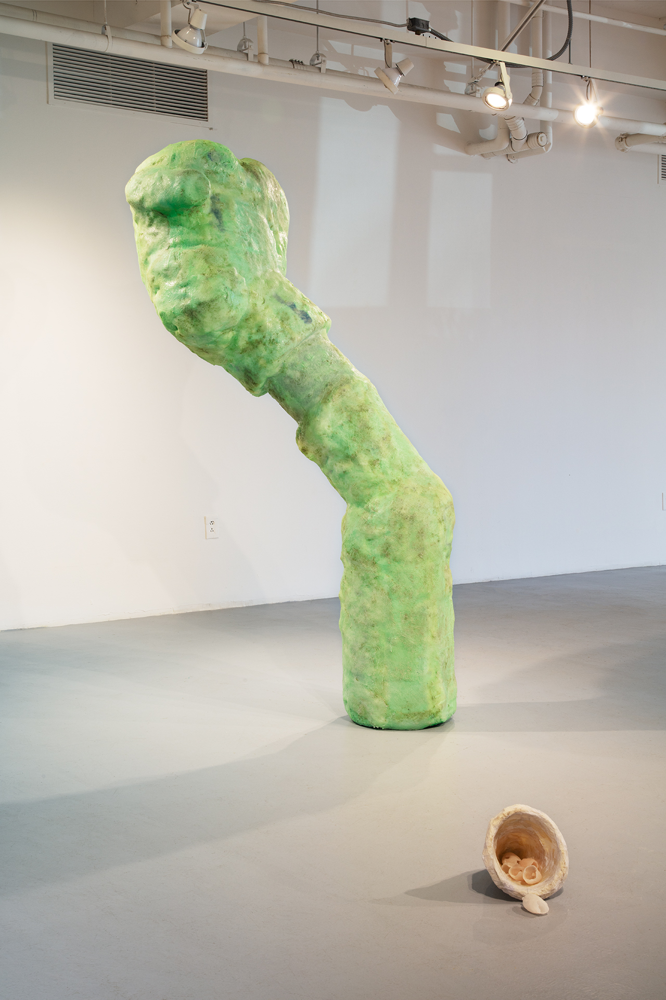
Excesses of a madness immediately apparent to all but himself
Epoxy resin, fiberglass, polystyrene, wood, pigments, wax, paper-maché, & cast wax tulips
84” x 33” x 52”
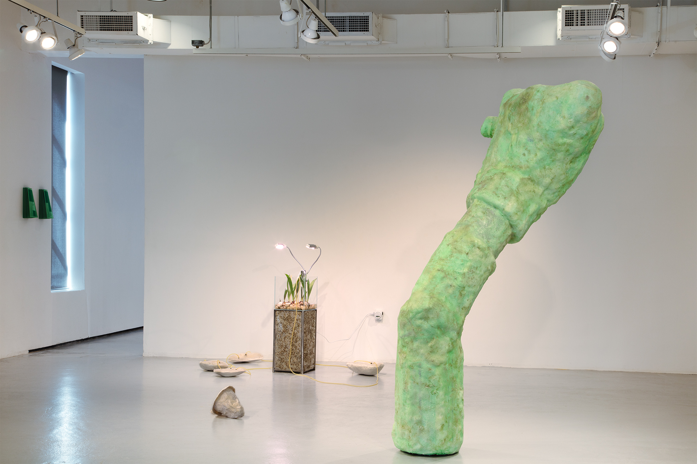
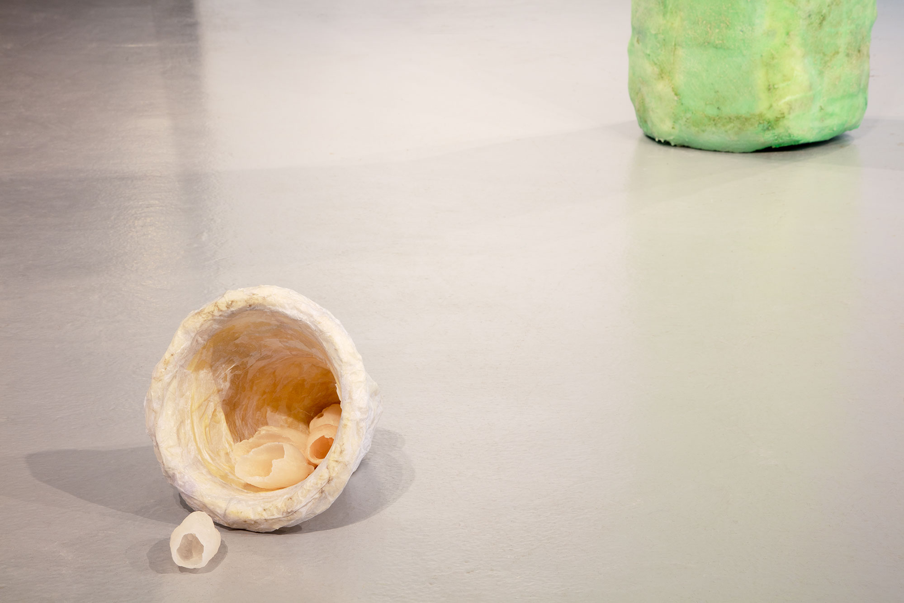
Lubbert Das
Fiberglass reinforced gypsum cement, polystyrene, wood, cement dye, paint, nickel-plated hardware, latex tubing, & cast wax tulips
70” x 76” x 57”
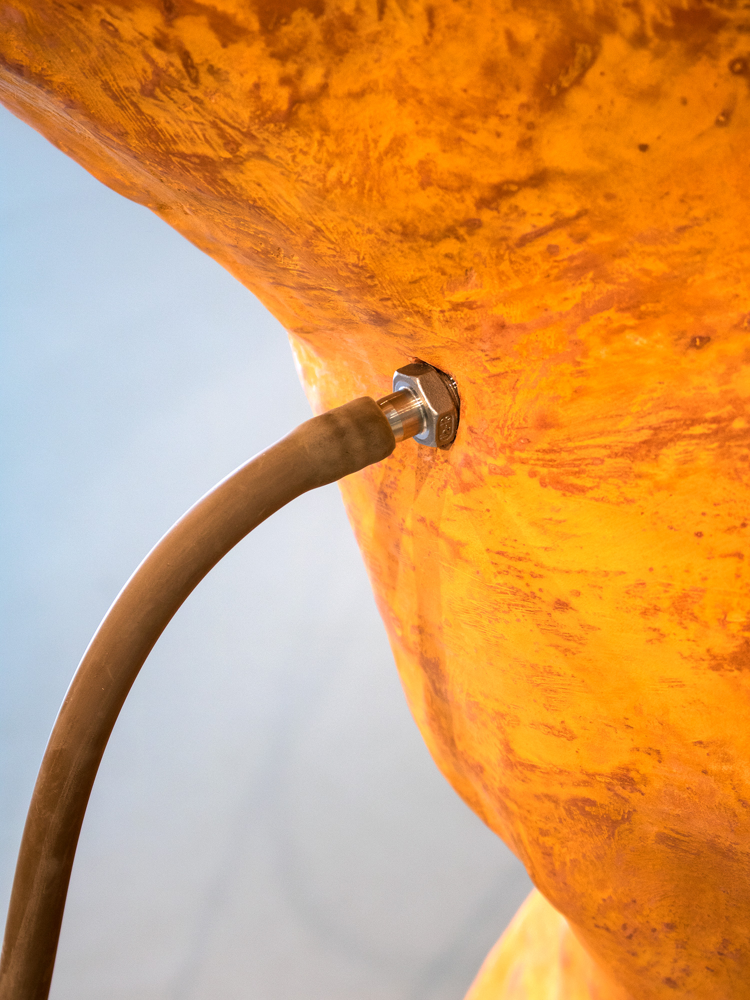
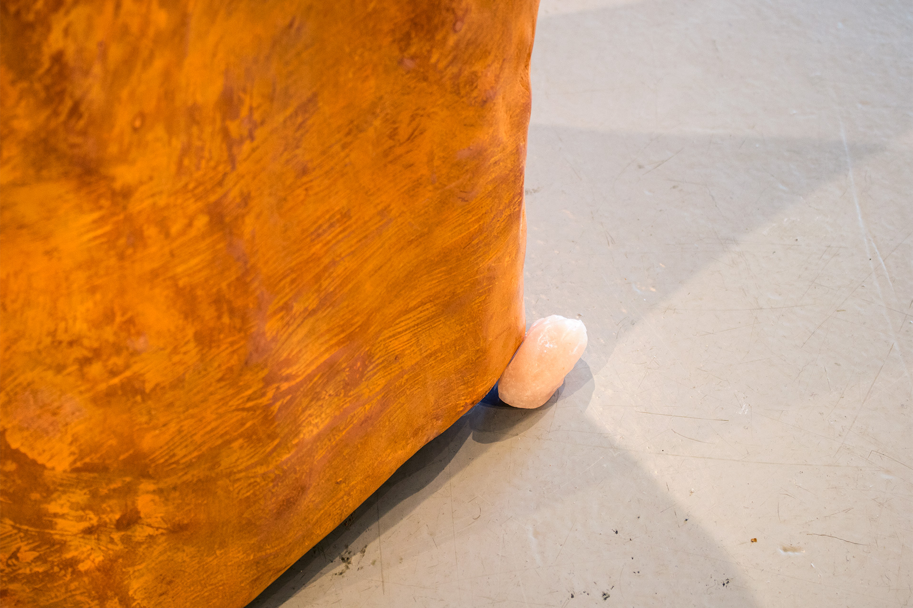
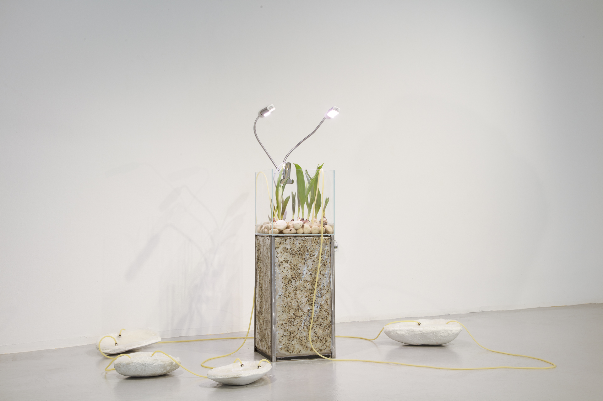
Prosthetics for Cultivation
Acrylic-reinforced concrete, silicone, nickel-plated hardware, water, steel, vinyl, petroleum jelly, fertilizer, stones, grow lamps (set to turn on daily from 9:30 am to 6:30 pm), & sprouted tulip bulbs
Dimensions variable
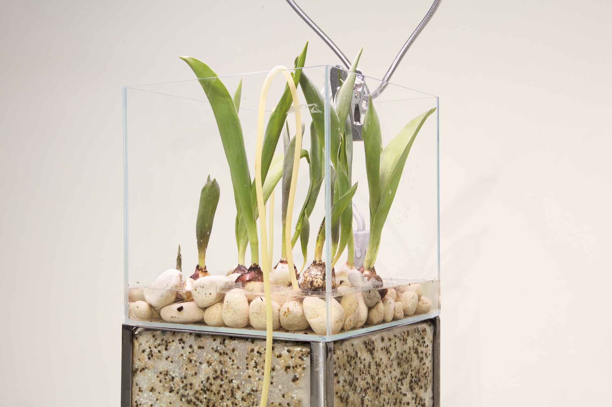
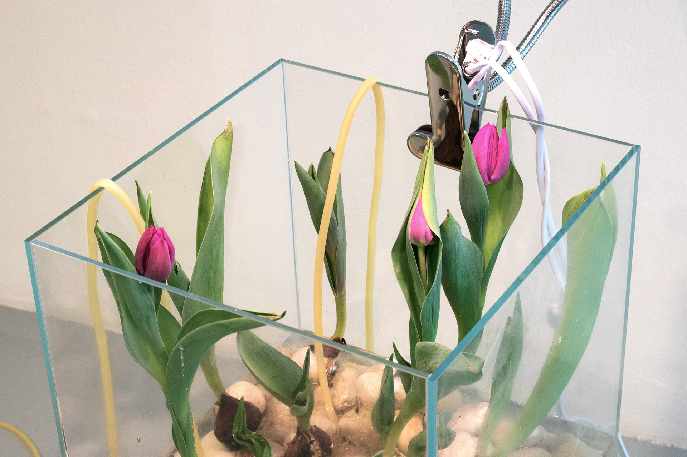
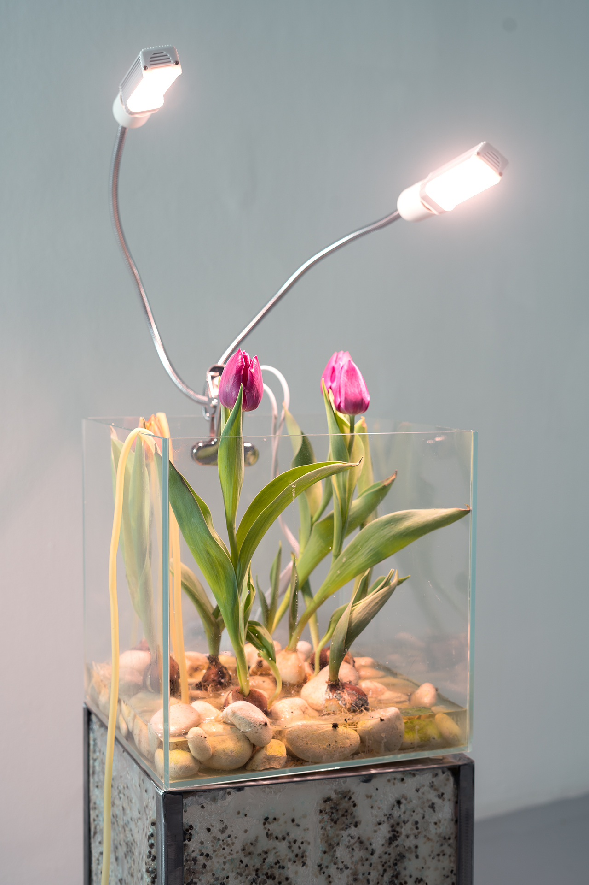
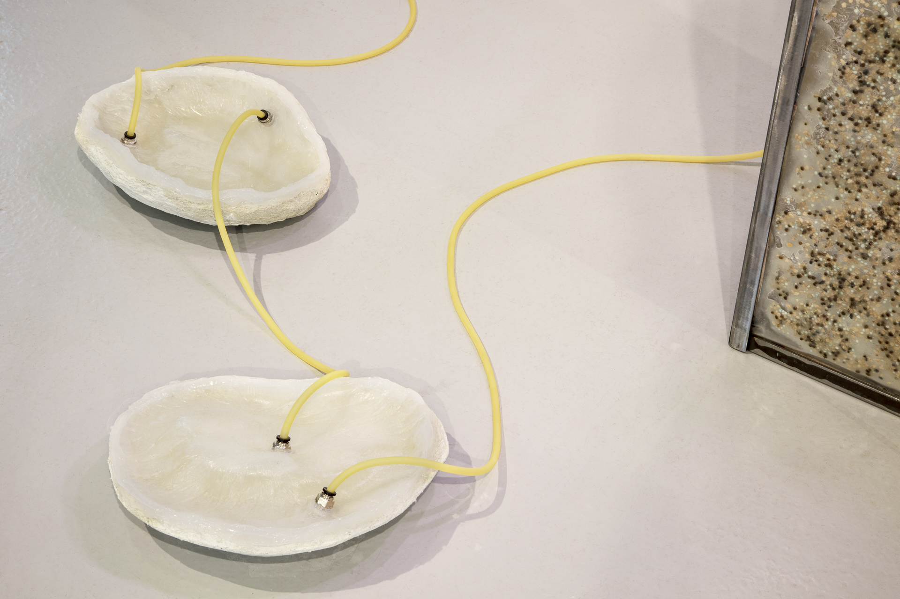
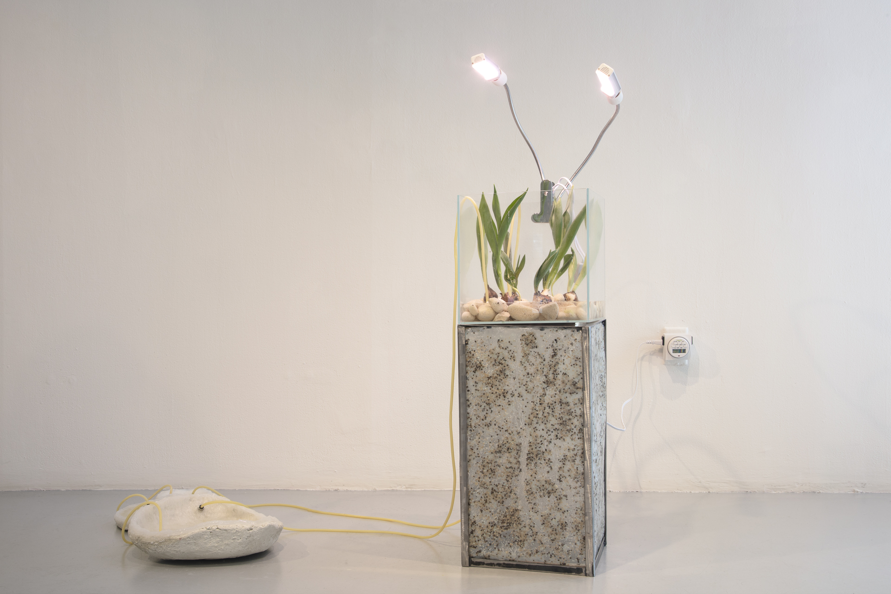
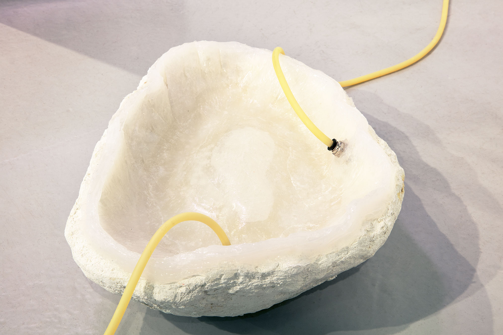
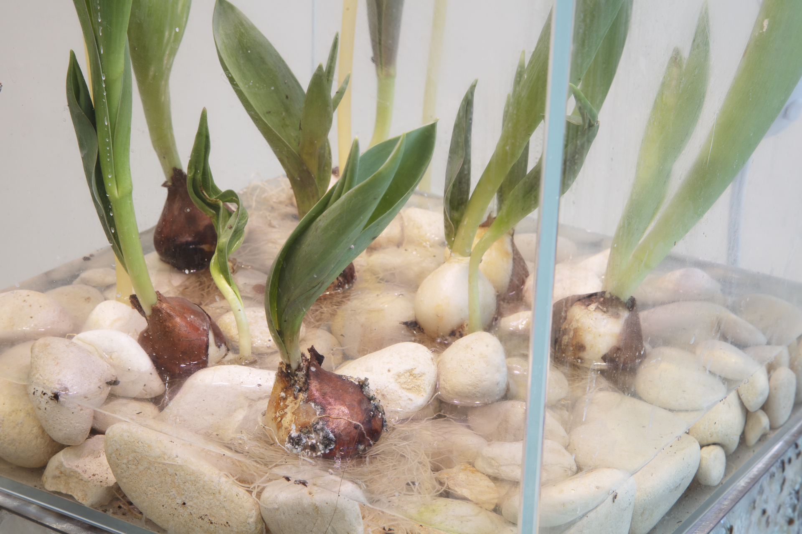
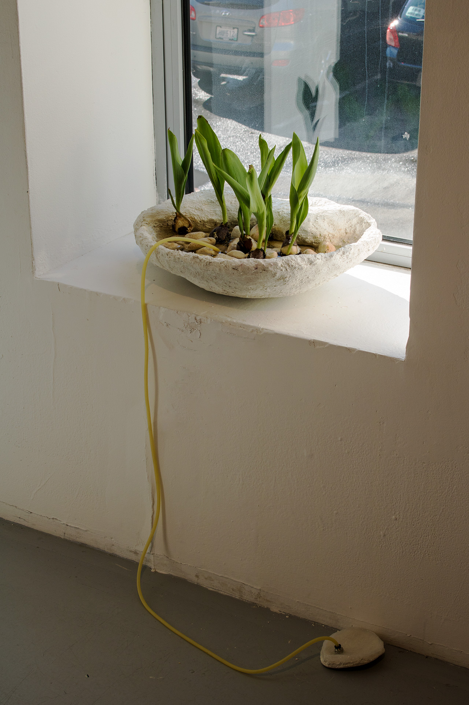